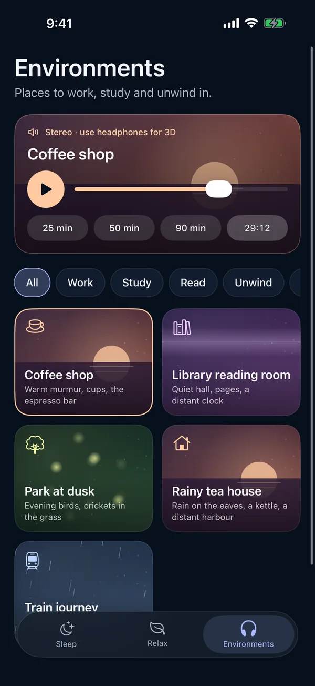

Focus and study sounds: coffee shop, library, train
Background sound for work or study is usually something even, with no surprises: the murmur of a coffee shop, the hush of a library reading room, the steady rhythm of a train, or plain brown noise.
Moonrain is a free sleep-sound app for iPhone, iPad and Apple silicon Macs. Its Environments tab has places to work, study and unwind in, and it works completely offline: no account, no ads, no subscription and no tracking.
In the app · Environments
- Coffee shopWarm murmur, cups, the espresso bar
- Library reading roomQuiet hall, pages, a distant clock
- Train journeySteady carriage, rain on the window
- Rainy tea houseRain on the eaves, a kettle, a distant harbour
- Park at duskEvening birds, crickets in the grass
- Noise labSteady brown, pink or white noise, no sudden sounds
Pick a session of 25, 50 or 90 minutes, or run focus cycles: 25 minutes of focus, then a quieter 5 minute break, four times. Use headphones for 3D sound.

Built-in focus presets
Focus Flow
Study & Reading
Focus
These are mixes from the sound library, where Café and Train Cabin are also single sounds you can layer yourself, up to four at a time.
Starts with your Work Focus
Focus filter · new in 1.3
Add the Moonrain Focus filter to your Work Focus and Moonrain opens to Environments when it starts.
iPhone search · new in 1.3
The places show up in iPhone search, so you can start the coffee shop from a search.
Noise lab
Choose brown, pink or white, then move the Tone slider darker or brighter. A soft chime marks each focus block and break.
Questions
Is there a focus timer with breaks?
Yes. Focus cycles run 25 minutes of focus, then a quieter 5 minute break, four times. You can also pick a single session of 25, 50 or 90 minutes.
Can it open when my Work Focus turns on?
Yes. Add the Moonrain Focus filter to your Work Focus and turn on Open to Environments. Moonrain then opens to Environments when that Focus starts.
Do the coffee shop and library work offline?
Yes. Every Environment is built into the app, so it plays offline, including in airplane mode.
Do I need headphones?
Use headphones for 3D sound. The Environments place sounds around you, and headphones are what make that work.